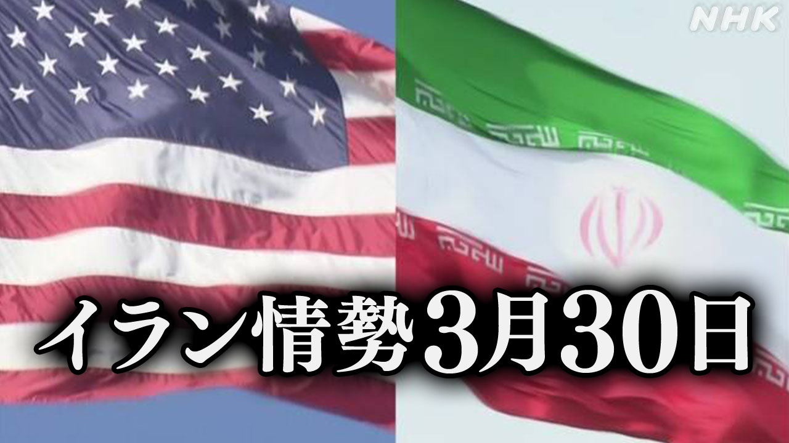
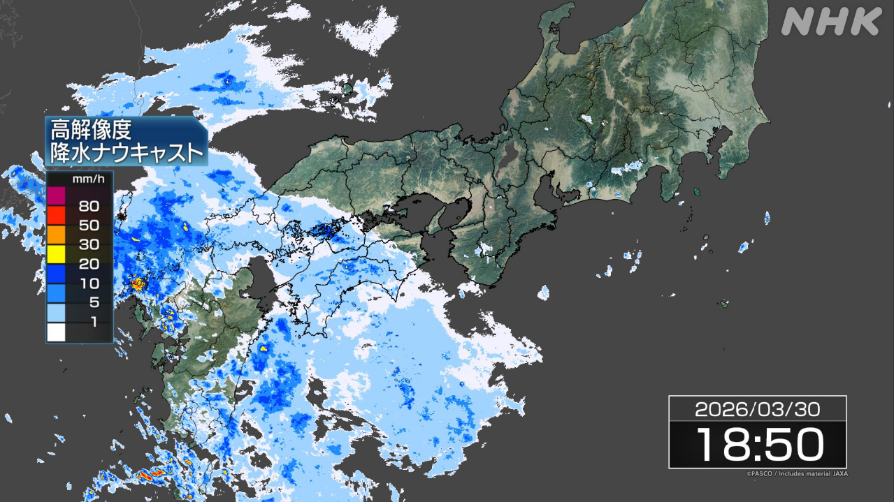
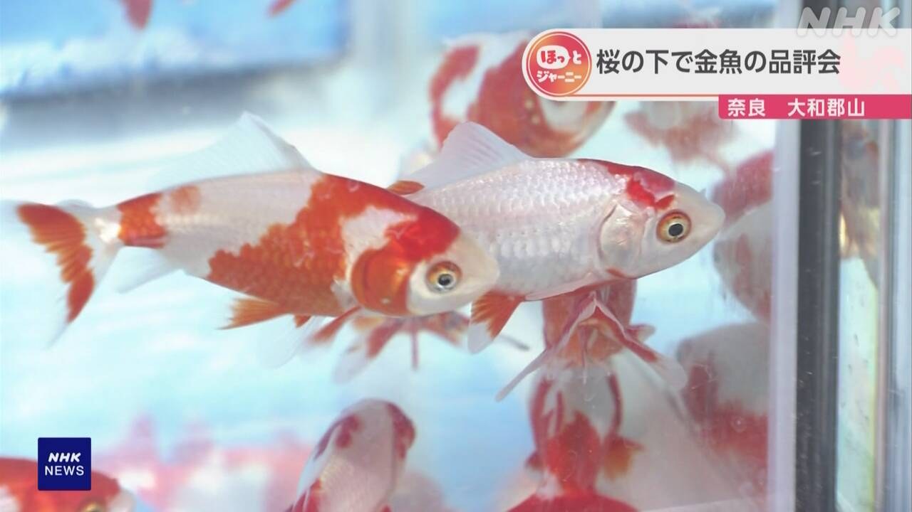

最新ニュース
1️⃣ アメリカとイスラエルがイランへの攻撃を始めてから1か月たった

アメリカとイスラエルがイランへの攻撃を始めてから28日で1か月になりました。
首都テヘランなどを空から攻撃しています。アメリカにある人権の団体などは、イランで23日までに1443人以上の市民が亡くなったと言っています。
イランも、イスラエルなどへの攻撃を続けています。
戦いを止めるために話し合いが必要です。トランプ大統領は、29日、イランとの話し合いは進んでいる、と記者たちに言いました。
イランの隣にある国、パキスタンは、アメリカとイランとの話し合いをパキスタンで開いてもいいと言っています。話し合いがどうなるか、世界が注目しています。
2️⃣ 京都府 小学5年生の男の子がいなくなった
小学5年生の男の子がいなくなりました。
男の子は、京都府南丹市に住んでいる安達結希さん11歳です。
警察によると、お父さんは、23日の朝、車で結希さんを学校に送りました。そのあと、どこへ行ったかわかりません。
29日、学校から3kmぐらい離れた山の中で、結希さんのリュックサックが見つかりました。警察は、山の中などに結希さんがいないか、さがしています。
3️⃣ 西日本と東日本 雨や風に気をつけて

30日から31日まで、西日本と、東日本の太平洋側でとてもたくさんの雨が降ったり急に強い風が吹いたりするかもしれません。
気象庁によると、雨を降らせる雲が西日本から東日本に動いています。天気が悪くなります。
とくに九州や四国などでは雷が鳴って、雨がたくさん降るところがあるかもしれません。
建物が低い所にあると水が入るかもしれません。
気象庁は、急に冷たい風が吹いたり雷の音が聞こえたりしたら、すぐに丈夫な建物の中に入ってほしいと言っています。
4️⃣ 奈良県 いちばんいい金魚を決める会があった

泳いでいるのを見て楽しむ魚、金魚のニュースです。
奈良県で、28日いちばんいい金魚を決める会がありました。
大和郡山市の金魚は昔から有名です。1年間に4000万匹ぐらいを育てています。
金魚を育てている人たちは100匹ぐらいの金魚を持って集まりました。
いちばんいい賞に選ばれたのは体の長さが30cmぐらいの大きい金魚です。赤と白、そして黒の模様があってきれいです。
大阪市から来た女の人は「初めて来ました。大きくてきれいな金魚で、すごかったです」と話していました。
- 〜になる
- 〜てから
- 〜から
- 〜など
- 〜ている / 〜でいる
- 〜までに
- 〜まで
- 〜以上
- 〜ため
- 〜ため(に)
- 〜ても / 〜でも
- 〜てもいい
- 〜がある / 〜がいる
- 〜によると
- 〜後 / 〜あと
- 〜中
- 〜くらい / 〜ぐらい
- 〜かもしれない / 〜かもしれません
- 〜から〜まで
- 〜たり〜たりする
- 使役 (〜させる / 〜せる)
- 〜ところ
- 〜や〜など
vebaev.github.io
Generated: 2026-03-30 11:13:46 UTC